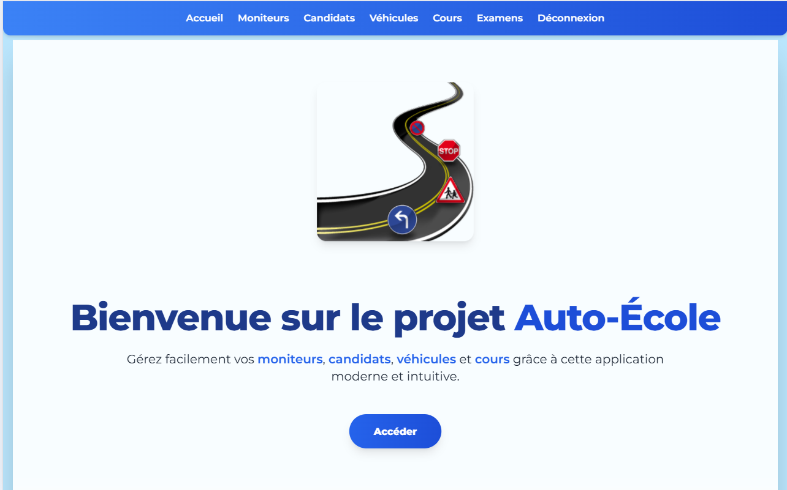
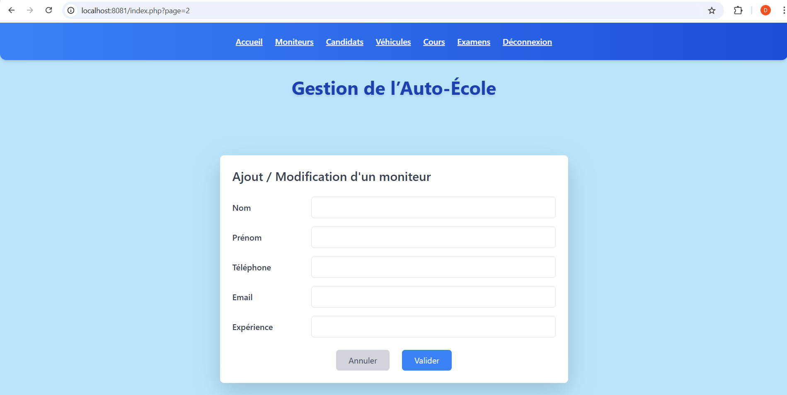
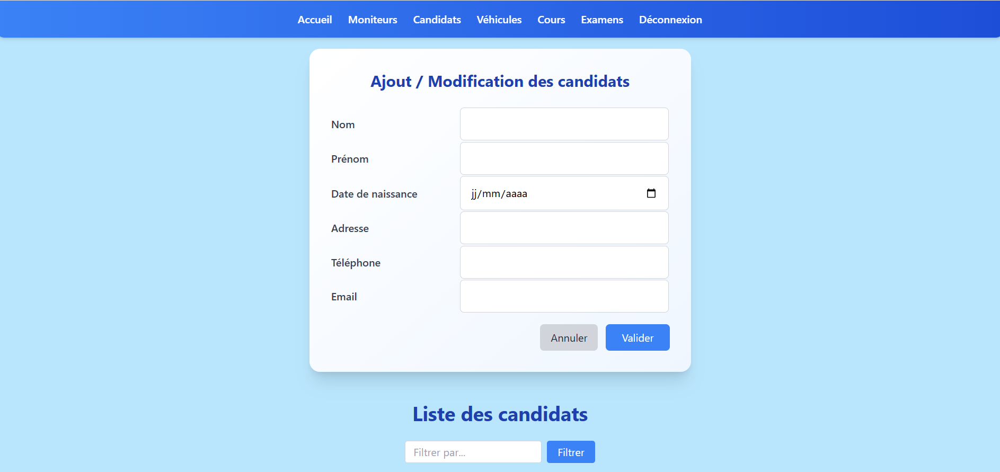
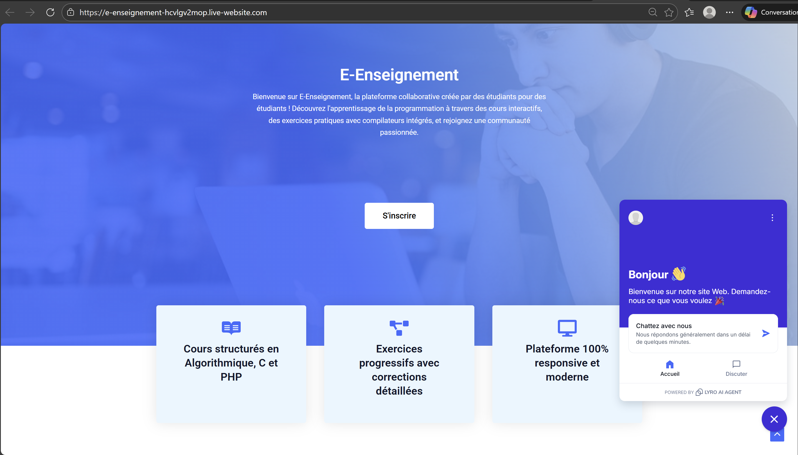
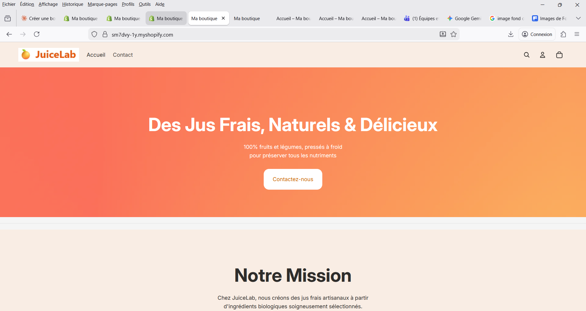
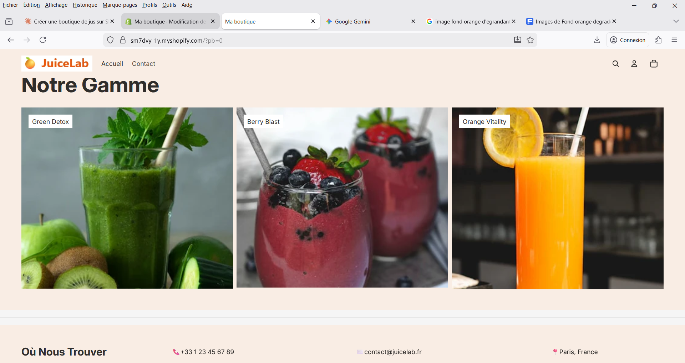

Mouhammad El Bachir Dieng
Étudiant BTS SIO SLAM
Passionné par le développement logiciel et les systèmes d'information.
Actuellement en 2ème année de BTS SIO option SLAM.
Étudiant BTS SIO SLAM
Développeur en devenir, toujours en quête d'apprentissage
Je suis étudiant en 2ème année de BTS Services Informatiques aux Organisations, option SLAM (Solutions Logicielles et Applications Métiers) à l'IRIS Paris.
Mon parcours m'a permis de développer des compétences solides en développement web et applicatif, consolidées par trois stages en entreprise : développeur web chez Mambo Inchaud (Pizzeria Bella Italia), découverte de l'architecture événementielle MQTT/AMQP chez Capgemini Technology Services, et refonte WordPress chez Polaris ST.
Pour la suite, je vise une alternance en DevOps ou IA / Data à partir de septembre 2026, afin de combiner développement applicatif et automatisation de l'infrastructure.
Services Informatiques aux Organisations
Le BTS Services Informatiques aux Organisations est un diplôme national de niveau Bac+2 qui forme des techniciens capables de gérer un parc informatique, d'administrer un réseau, ou de développer des applications adaptées aux besoins des utilisateurs.
Stack technique et domaines d'expertise
Réalisations académiques et professionnelles
Nov-Déc 2025 • Stage 2e année · Mambo Inchaud
Site vitrine complet d'une pizzeria parisienne fictive : 5 pages publiques + back-office admin sécurisé. Conception du cahier des charges, modélisation BDD, développement front et back, déploiement en production sur InfinityFree.
Juil-Août 2025 • Stage 1ère année · Capgemini Technology Services
POC d'architecture événementielle pour Manufacturing Execution System (MES) : déploiement d'un broker Apache ActiveMQ 6.1.7 et système publisher/subscriber Python pour simuler la communication entre machines industrielles. Encadrement : Lead SaaS Platform Architect.
Nov 2025 • Formation BTS · 2e année
Développement d'un site web complet pour une auto-école avec système de gestion des inscriptions, planning des cours et interface utilisateur moderne.



Sep 2025 • Formation BTS · 2e année
Conception et développement d'une plateforme e-learning complète avec gestion des cours, quizz interactifs et suivi de progression des étudiants.



Oct 2025 • Formation BTS · 2e année
Création et personnalisation d'une boutique en ligne Shopify avec intégration de passerelles de paiement, gestion du catalogue produits et optimisation SEO.



Oct 2025 • Formation BTS · 2e année
Développement d'un jeu Snake en langage C avec gestion des collisions, système de score, niveaux de difficulté et travail collaboratif via Git/GitHub.


Sep 2025 • Formation BTS · 2e année
Installation et configuration de GLPI (Gestionnaire Libre de Parc Informatique), un outil open-source de gestion des actifs informatiques et du helpdesk. Mise en place du ticketing, inventaire du parc et gestion des utilisateurs.
Réalisations professionnelles session 2026
Formation : BTS Services Informatiques aux Organisations
Option : SLAM (Solutions Logicielles et Applications Métiers)
Établissement : IRIS, Paris
Session : 2026
| Projet | Description | Période | Contexte | Technologies |
|---|---|---|---|---|
|
GLPI
|
Installation et configuration d'un serveur Linux virtualisé avec gestion des incidents GLPI | Sep 2025 | Formation BTS · 2e année |
GLPI
Linux
MySQL
|
|
E-Enseignement
|
Conception et développement d'un site e-learning avec le CMS WordPress | Sep 2025 | Formation BTS · 2e année |
WordPress
PHP
MySQL
|
|
Snake en C
|
Développement du jeu Snake en langage C avec Git/GitHub en mode projet | Oct 2025 | Formation BTS · 2e année |
C
Git
GitHub
|
|
Veille technologique
|
Veille sur l'application de l'intelligence artificielle dans le basketball (NBA / EuroLeague) | Oct 2025 | Formation BTS · 2e année |
IA
Machine Learning
Sports Analytics
|
|
JuiceLab (Shopify)
|
Développement du site marchand JuiceLab avec le CMS Shopify en mode projet | Oct 2025 | Formation BTS · 2e année |
Shopify
Liquid
CSS
|
|
Auto-école
|
Conception et développement du site internet Auto-école en HTML/CSS et PHP/MySQL | Nov 2025 | Formation BTS · 2e année |
PHP
MySQL
JS
|
|
Pizzeria Bella Italia
|
Site vitrine complet PHP/MySQL avec back-office admin sécurisé | Nov-Déc 2025 | Stage Mambo Inchaud (2e année) |
PHP 8
MySQL
PDO
|
|
Simulateur MES
|
Simulateur industriel MQTT/AMQP pour Manufacturing Execution System | Juil-Août 2025 | Stage Capgemini (1ère année) |
Python
MQTT
AMQP
|
Formations validées et certifications professionnelles
Formation professionnelle
Maîtrise des concepts avancés de Python incluant la programmation orientée objet, les structures de données, et le développement d'applications.
Formation professionnelle
Expertise en développement WordPress incluant la création de thèmes personnalisés, plugins, et optimisation de sites web.
Mes centres d'intérêt tech et thématiques de veille
Ma veille porte sur l'application de l'intelligence artificielle dans le basketball, à la fois en NBA et en EuroLeague. Ce sujet est à l'intersection de mes études en informatique et de ma passion personnelle pour le basket. J'explore concrètement trois axes :
Cette veille me permet d'observer comment l'IA transforme un domaine concret au-delà de la simple théorie, et nourrit mon intérêt pour la data engineering et le machine learning.
Sources et flux RSS :
Aggregation des flux RSS via Feedly · 30 minutes de veille hebdomadaire
Discutons de votre projet ou d'une opportunité professionnelle
Argenteuil, France
Une question ? Un projet ? N'hésitez pas à me contacter !